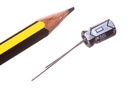
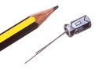
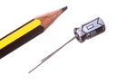

| Type | Size | Color | Description | Index |
| CAPE Capacitor (Electrolytic) |
63D 6.3 mm |
X |
UF100 100 uF |
VA 25v |

| Info | Value |
| Type | Capacitor (Electrolytic) |
| Size | 6.3 mm |
| Description | 100 uF |
| Index | 25v |
| Pitch | 2.5 mm |
| Height | 11 mm |
| Diameter | 6.3 mm |